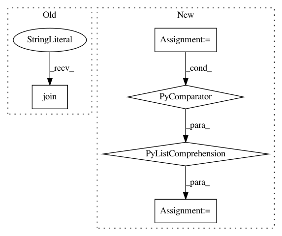

61980b57db5349ec0adc4a7b4797ee4742c21b73,deeppavlov/models/classifiers/intents/intent_model.py,KerasIntentModel,texts2vec,#KerasIntentModel#Any#,148
Before Change
if len(tokens) > self.opt["text_size"]:
tokens = tokens[:self.opt["text_size"]]
embeddings = self.fasttext_model.infer(" ".join(tokens))
if len(tokens) < self.opt["text_size"]:
pads = [np.zeros(self.opt["embedding_size"])
for _ in range(self.opt["text_size"] - len(tokens))]
After Change
pad = np.zeros(self.opt["embedding_size"])
embeddings_batch = self.fasttext_model([" ".join(sen.split()[:self.opt["text_size"]]) for sen in sentences])
embeddings_batch = [[pad] * (self.opt["text_size"] - len(tokens)) + tokens for tokens in embeddings_batch]
embeddings_batch = np.asarray(embeddings_batch)
return embeddings_batch
In pattern: SUPERPATTERN
Frequency: 3
Non-data size: 5
Instances
Project Name: deepmipt/DeepPavlov
Commit Name: 61980b57db5349ec0adc4a7b4797ee4742c21b73
Time: 2018-02-15
Author: yoptar@gmail.com
File Name: deeppavlov/models/classifiers/intents/intent_model.py
Class Name: KerasIntentModel
Method Name: texts2vec
Project Name: hanxiao/bert-as-service
Commit Name: b44d6115097e2bebc4a1ecef869e04e2c60af7bb
Time: 2018-12-15
Author: hanhxiao@tencent.com
File Name: benchmark.py
Class Name:
Method Name:
Project Name: OpenNMT/OpenNMT-py
Commit Name: 63871d5ab3301d015805abddd8f4259680d6a24a
Time: 2017-09-21
Author: bpeters@coli.uni-saarland.de
File Name: translate.py
Class Name:
Method Name: main